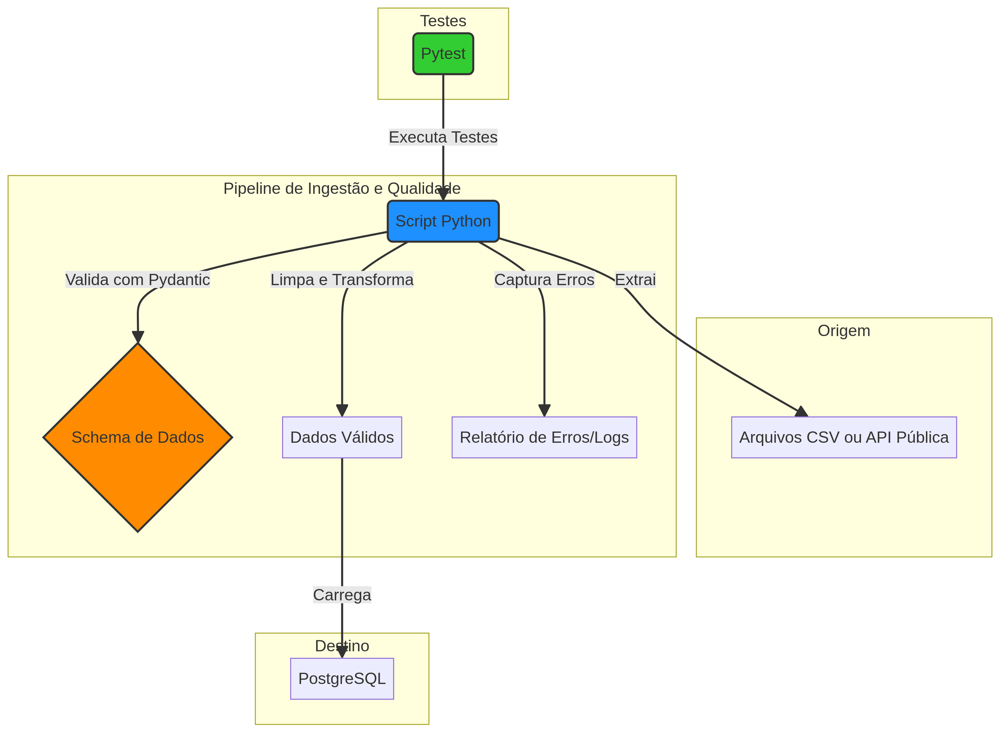

Dados sujos são o inimigo silencioso de qualquer operação data-driven. Neste projeto, construí um pipeline ETL que trata qualidade de dados como requisito de primeira classe — não como um "nice to have".
Contexto
O cenário era um e-commerce com ingestão diária de 10.000+ registros de vendas vindos de múltiplas fontes (ERP, planilhas manuais, APIs de marketplace). O problema: dados inconsistentes quebravam relatórios, geravam métricas erradas e prejudicavam decisões de negócio.
A Solução: Validação como Código

A ideia central foi usar Pydantic para definir schemas de validação que funcionam como contratos de dados. Cada registro passa por validação tipada antes de entrar no banco — se não atende ao contrato, é separado para quarentena com log detalhado do erro.
- Extract: Leitura de CSVs, APIs e banco legado com
Pandas - Transform: Normalização de campos, remoção de duplicatas, merge de fontes
- Validate: Cada registro é validado contra um modelo
Pydanticcom tipos, ranges e regras de negócio - Load: Registros válidos vão para
PostgreSQL, rejeitados vão para tabela de quarentena
Testes Automatizados
Implementei uma suite de testes com Pytest que cobre cenários como:
- Campos obrigatórios nulos
- Valores fora do range esperado (preço negativo, quantidade zero)
- Formatos de data inconsistentes
- Duplicatas cross-source
Resultados
- 99.9% de integridade dos dados carregados
- Redução de 80% nos erros de carga
- Time de BI deixou de "limpar dados na mão" semanalmente
- Quarentena com rastreabilidade completa de cada rejeição
Um pipeline que não valida dados é uma esteira que entrega peças com defeito.